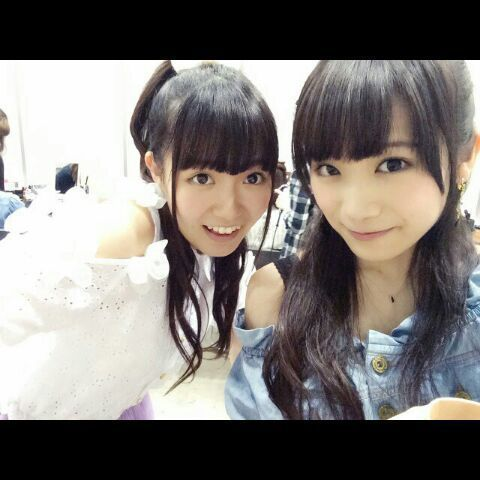

| 2014/07 06 Sun | ひめたん-OoO-その456 |
ごめんねーお待たせしました(´・ω・｀)
9thアンダー楽曲「ここにいる理由」
MVも乃木どこスタジオライブも
解禁になりました！
みなさんチェックしてくれたかな？

ひめたんはちゃんこ鍋担当！笑
ダンスも実はものすごくかっこいいから
ぜひライブでパフォーマンスを
観ていただきたい！にゃ
えーとーいろいろ振り返ろうかな
まずは乃木のの！
前回は
ろってぃー (川村真洋ちゃん)
かなりん (中田花奈ちゃん)でした☆
この組み合わせ、ピンと来る？
ちょっと前に取材していただいた
ダンス選抜の3人なの！偶然！
まあダンスの話なんて
一瞬しかしなかったけどね(´っ ω ｃ`)てへ
ゆるーい感じになりました♪
まあ楽しかったからよしとするっ
乃木のの公式ブログやfacebookに
収録風景の写メとか載ってるんだけどね
この日のりぼんは ろってぃーからの贈り物！
ろってぃーありがとねヽ(・∀・)ノ
明日の乃木ののは
あすかりん (齋藤飛鳥ちゃん)
らりん (永島聖羅ちゃん)です
次回もお楽しみに☆
続いて乃木どこ！
先週の乃木どこは頭脳王決定戦でした(＊^ω^＊)
ひめたんは4位という順位を
いただきました！
コメントを読んでるとね
「ひめたん意外と賢いんだね」
「ひめたん意外と勉強できるんだね」
「ひめたん今までばかにしてごめんね」......
意外って何！
そして最後の何(∩^o^)⊃━━━━━☆゜.*・。
ひめたんはこう見えても出来る子だよ！
こう見えてもってどう見えてるかわからんけど
実はやるときはやる子なんだよー
早押し問題なんて
何にもしてないけどね(笑)
あれなのよ、
運動会のかけっこのピストルとか
ビクッてなるタイプの人間なの(´・ω・｀)
ASEAN？カルデラ？
なんだよ厳かと40°しか
わからんかったよ(´・ω・｀)
再来週もお楽しみに♪

それから、
アンダーライブの感想
たくさんありがとうございました！
出演メンバー全員の熱い想いが
ファンのみなさんと共有できていれば
嬉しいです♪
いつも思うのは
いいライブだったなって日は必ず
ファンのみなさんに助けられてるなって(´・・`)
パフォーマーとしては正直まだまだ
力不足だし経験不足な私たち。
それでも最後はファンのみなさんの声援が
ライブを良い雰囲気を作ってくださってるなって
今回改めて感じました！
モチベーションは高いままキープしつつ
技術はさらに上のレベルを目指して
頑張っていきたいな( ´ ▽ ` )
あと6公演あります！
観に行くよーって方は楽しみにしてて下さい＊＊

 夏が来たので冷やし中華とか食べるんですけど
夏が来たので冷やし中華とか食べるんですけど
ひめたんはどんな鍋が好きですか？
いやーひめたんは
どんな鍋が好きなんだろうね┐(゜ ゜)┌
あぁぁあぁああうああ無性に鍋が食べたいッッ！！
とはならないからね最近は。
ひめたんは握手会とライブの
どちらが楽しいですか？
どちらがってゆーか
全然違うものだし比べられないねー
それぞれに違った楽しさがあって好きですよ♪
歌ってるひめたんがみたかったらライブ、
お話してみたかったら握手会に
遊びにきてほしいな( ´ ▽ ` )ノ
ひめたん46は
今回はおやすみさせてください
ごめんね。
いつもたくさんのコメント
ありがとうございます
前回の記事の全部読みました！
乃木ののの感想とかありがとうね♪
雑誌チェックしてくれてるのも嬉しいよ( ´ ▽ ` )
開運も観てくれてありがとー♪♪から
(＊´・ω・＊)
コメント(594)
2014/07/06 00:00